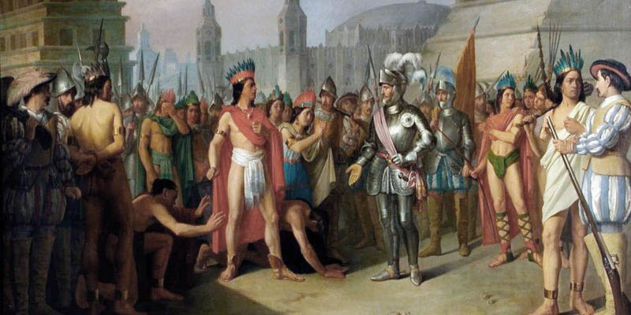

La historia de México abarca un período de tiempo vasto y complejo, desde la civilización prehispánica hasta la actualidad. En esencia, se puede dividir en varias etapas clave:
la época prehispánica, caracterizada por el desarrollo de culturas como la Olmeca, Teotihuacana, Maya, y la Azteca; la conquista española y la colonización, que duró más de 300 años; la lucha por la independencia en el siglo XIX; y finalmente, el México independiente, que ha experimentado revoluciones, reformas y un proceso de modernización en los siglos XIX y XX.
cultura mexicana
Etapas clave de la historia de MEXICO